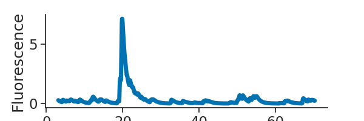
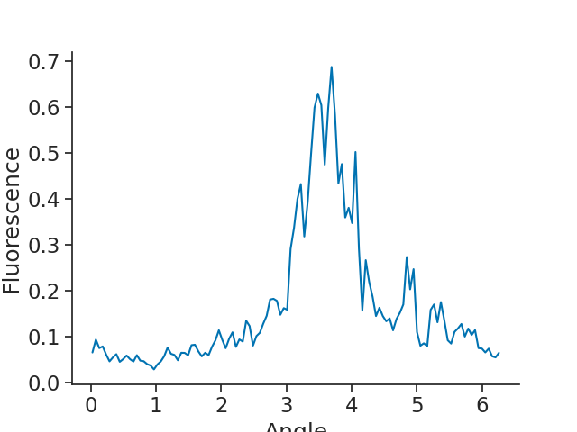
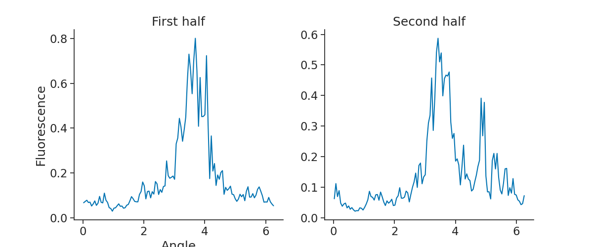

Note
Click here to download the full example code
Calcium Imaging
Working with calcium data.
For the example dataset, we will be working with a recording of a freely-moving mouse imaged with a Miniscope (1-photon imaging). The area recorded for this experiment is the postsubiculum - a region that is known to contain head-direction cells, or cells that fire when the animal's head is pointing in a specific direction.
The NWB file for the example is hosted on OSF. We show below how to stream it.
See the documentation of Pynapple for instructions on installing the package.
This tutorial was made by Sofia Skromne Carrasco and Guillaume Viejo.
Warning
This tutorial uses seaborn and matplotlib for displaying the figure
You can install all with pip install matplotlib seaborn tqdm
mkdocs_gallery_thumbnail_number = 1
Now, import the necessary libraries:
import numpy as pd
import pynapple as nap
import matplotlib.pyplot as plt
import seaborn as sns
import sys, os
import requests, math
import tqdm
custom_params = {"axes.spines.right": False, "axes.spines.top": False}
sns.set_theme(style="ticks", palette="colorblind", font_scale=1.5, rc=custom_params)
Downloading the data
First things first: Let's find our file
path = "A0670-221213.nwb"
if path not in os.listdir("."):
r = requests.get(f"https://osf.io/sbnaw/download", stream=True)
block_size = 1024*1024
with open(path, 'wb') as f:
for data in tqdm.tqdm(r.iter_content(block_size), unit='MB', unit_scale=True,
total=math.ceil(int(r.headers.get('content-length', 0))//block_size)):
f.write(data)
Parsing the data
Now that we have the file, let's load the data
Out:
A0670-221213
┍━━━━━━━━━━━━━━━━━━━━━━━┯━━━━━━━━━━━━━┑
│ Keys │ Type │
┝━━━━━━━━━━━━━━━━━━━━━━━┿━━━━━━━━━━━━━┥
│ position_time_support │ IntervalSet │
│ RoiResponseSeries │ TsdFrame │
│ z │ Tsd │
│ y │ Tsd │
│ x │ Tsd │
│ rz │ Tsd │
│ ry │ Tsd │
│ rx │ Tsd │
┕━━━━━━━━━━━━━━━━━━━━━━━┷━━━━━━━━━━━━━┙
Let's save the RoiResponseSeries as a variable called 'transients' and print it
Out:
Time (s) 0 1 2 3 4 ...
---------- ------- ------- -------- -------- -------- -----
3.1187 0.27546 0.79973 0.16383 0.20118 0.029255 ...
3.15225 0.26665 0.86751 0.15879 0.23682 0.027189 ...
3.18585 0.25796 0.89419 0.15352 0.25074 0.036514 ...
3.2194 0.24943 0.89513 0.14812 0.25215 0.056273 ...
3.253 0.24111 0.88023 0.14898 0.24651 0.070954 ...
...
1203.4566 0.19654 0.17056 0.11461 0.085079 1.62 ...
1203.4902 0.19052 0.16645 0.11096 0.080197 1.8811 ...
1203.52375 0.18449 0.16105 0.10717 0.075416 2.0599 ...
1203.55735 0.17851 0.15494 0.10331 0.070814 2.2176 ...
1203.5909 0.17264 0.14851 0.099416 0.066429 2.311 ...
dtype: float64, shape: (35757, 65)
Plotting the activity of one neuron
Our transients are saved as a (35757, 65) TsdFrame. Looking at the printed object, you can see that we have 35757 data points for each of our 65 regions of interest. We want to see which of these are head-direction cells, so we need to plot a tuning curve of fluorescence vs head-direction of the animal.
plt.figure(figsize=(6, 2))
plt.plot(transients[0:2000,0], linewidth=5)
plt.xlabel("Time (s)")
plt.ylabel("Fluorescence")
plt.show()

Here we extract the head-direction as a variable called angle
Out:
Time (s)
---------- -------
3.0994 2.58326
3.10775 2.5864
3.11605 2.5905
3.1244 2.59191
3.13275 2.59263
...
1206.18945 3.69804
1206.1978 3.6728
1206.20615 3.65452
1206.21445 3.61199
1206.2228 3.5495
dtype: float64, shape: (144382,)
As you can see, we have a longer recording for our tracking of the animal's head than we do for our calcium imaging - something to keep in mind.
Out:
Calcium tuning curves
Here we compute the tuning curves of all the neurons
Out:
0 1 2 ... 62 63 64
0.026195 0.395699 0.055843 0.150304 ... 0.086804 0.090393 0.090931
0.078555 0.279695 0.052430 0.153925 ... 0.098154 0.112558 0.101200
0.130915 0.398603 0.044422 0.201113 ... 0.089716 0.092577 0.127856
0.183274 0.379213 0.043964 0.149085 ... 0.087498 0.071661 0.144850
0.235634 0.266577 0.038920 0.175439 ... 0.072857 0.070615 0.177883
... ... ... ... ... ... ... ...
6.047557 0.390266 0.072893 0.174015 ... 0.115768 0.108395 0.080172
6.099916 0.266773 0.065594 0.118181 ... 0.110677 0.103724 0.081672
6.152276 0.268866 0.060269 0.120475 ... 0.121157 0.099209 0.083993
6.204636 0.281763 0.064460 0.131925 ... 0.099411 0.098601 0.088175
6.256995 0.293497 0.048092 0.117291 ... 0.089862 0.084487 0.100030
[120 rows x 65 columns]
We now have a DataFrame, where our index is the angle of the animal's head in radians, and each column represents the tuning curve of each region of interest. We can plot one neuron.

It looks like this could be a head-direction cell. One important property of head-directions cells however, is that their firing with respect to head-direction is stable. To check for their stability, we can split our recording in two and compute a tuning curve for each half of the recording.
We start by finding the midpoint of the recording, using the function get_intervals_center. Using this, then create one new IntervalSet with two rows, one for each half of the recording.
center = transients.time_support.get_intervals_center()
halves = nap.IntervalSet(
start = [transients.time_support.start[0], center.t[0]],
end = [center.t[0], transients.time_support.end[0]]
)
Out:
/mnt/home/gviejo/pynapple/docs/examples/tutorial_calcium_imaging.py:118: UserWarning: Some starts and ends are equal. Removing 1 microsecond!
halves = nap.IntervalSet(
Now we can compute the tuning curves for each half of the recording and plot the tuning curves for the fifth region of interest.
half1 = nap.compute_1d_tuning_curves_continous(transients, angle, nb_bins = 120, ep = halves.loc[[0]])
half2 = nap.compute_1d_tuning_curves_continous(transients, angle, nb_bins = 120, ep = halves.loc[[1]])
plt.figure(figsize=(12, 5))
plt.subplot(1,2,1)
plt.plot(half1[4])
plt.title("First half")
plt.xlabel("Angle")
plt.ylabel("Fluorescence")
plt.subplot(1,2,2)
plt.plot(half2[4])
plt.title("Second half")
plt.show()

Total running time of the script: ( 0 minutes 0.535 seconds)
Download Python source code: tutorial_calcium_imaging.py